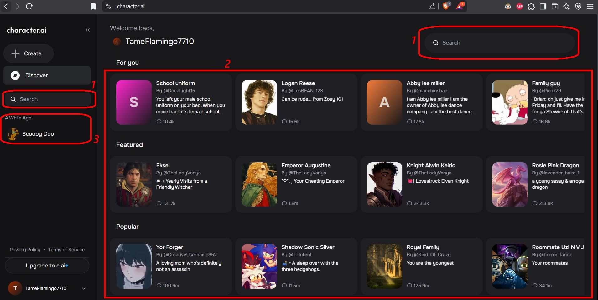
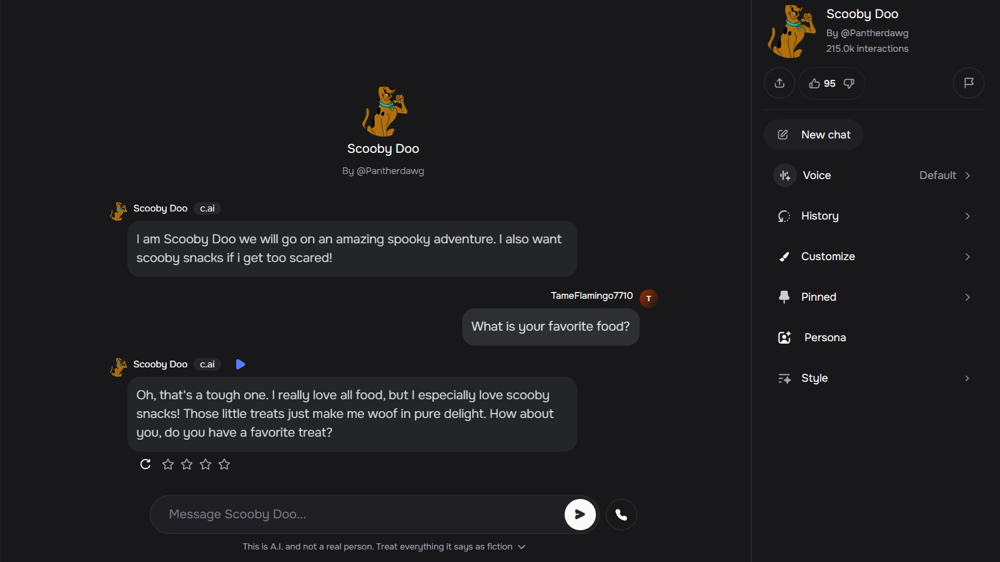

Character.AI
Character.AI is an AI chatbot platform that allows users to create and interact with AI characters. The AI characters range from fictional and historical figures to celebrities, making it a versatile tool for entertainment, education, and creative writing.
What can you do with it?
- You can establish multi-character conversations, allowing for dynamic interactions with multiple AI personas at once.
- As AI is heavily reliant on user input, you can rate and modify responses to improve the AI’s conversational accuracy over time.
- You can create you own personal conversations, fostering a more human-like experience and unique interactions that could only be possible with virtual personalization.
How to use Character.AI
Firstly, it is necessary to log in. You can use a Gmail account, or a different email. After logging in, you will be able to visualize the following screen:

- Search bars: here you can search for different characters already created by the community or the character.AI team.
- This shows a list of most popular, new, and trending characters in existance. You can start a conversation with any of them if you like.
- Here you can see the different AI personas that you have previously talked to.
After selecting a character, you can start a conversation with it!
Advantages of using Character.AI in teaching environments:
- Engaging and Interactive – Provides a dynamic user experience.
- Creative Writing Assistance – Helps writers brainstorm and simulate dialogues.
- Role-Playing and Gaming – Useful for interactive storytelling and educational games.
Unlike generic chatbots that feel robotic, Character.AI adds personality to conversations. It responds with humor, emotions, and a natural flow, making interactions feel more human-like. It even remembers the tone of the conversation, so if I started a chat playfully, it maintained that energy.Fredrick Eghosa, in "Character.AI (c.ai) review: My honest testing."

References
- Eghosa, F. (2025, April 1). Character.AI (c.ai) review: My honest testing. Techpoint.Africa. https://techpoint.africa/guide/character-ai-review/